01. 基本信息
角色传记(CreatedStory) 是 XJ 为废土快递编写的一个纯文本模组, XJ 最初只是想为 NPC 设置一个合适的固定姓名, 让他们不再出现各种奇怪的称呼而已(原有的随机姓名有的像恶搞, 就让人挺出戏的), 在这个过程中, XJ 逐渐有了各种各样的想法, 最终才演变成了现在这样, 在设定上, XJ 尽量做到符合游戏的世界观概念, 并在此基础上根据角色的[头像/性别/能力/个性/阵营], 再做出扩散性延伸.
02. 初始角色
————
性别: 男;
身份: 信使(Courier);
姓名: 穆沙·巴列维(Moza·Pahlavi);
传记: 穆沙是废土世界的一个信使, 工作就是在各个据点之间传递信息, 他经常需要独自一人面对困难, 有时甚至要冒着生命的危险, 而他所带来的消息, 大多数情况下也都是不利的, 例如战争/灾难/瘟疫/尸潮等等, 人们因此视他为灾星, 不愿意接近他, 甚至有些癫狂的人将厄运归咎于他, 对他大打出手, 穆沙有时候当然也会厌恶自己的工作, 但是当他把亲人好友的信件送到目的地时, 收件人对他的感谢也是情真意切的, 这也是他能继续坚持下去的原因了, 他尽量忠于自己的职责, 并希望有一天, 能给大家带来大灾变已经结束的好消息;
————
性别: 男;
身份: 快递员(Runner);
姓名: 利威尔(Levier);
传记: 利威尔过去是位小有名气的车手, 他参加过多次死亡竞赛, 那是种惊险的竞速游戏, 车手们开着各种改装汽车, 在戈壁中互相追逐厮杀, 直至车毁人亡或冲过终点, 尽管利威尔从未在比赛中获得过显赫名次, 但好歹是每次都能活着下场, 在某天他突然发现, 自己入行时所认识的车手几乎都已经不在了, 他也开始思考未来的出路, 后来他在赞助商那里找到了一份快递员工作, 尽管收入不高, 但起码不至于提心吊胆, 他也过上了一段安稳的日子, 可自从商会领袖换届并调整政策, 他的公司开始极限压榨每一单快递的费用, 以至于即使每天工作十几个小时, 也堪堪只能支付房租和三餐的开销, 最终他决定变卖家产, 购入一辆属于自己的二手卡车, 去做点运输和倒卖的工作;
————
性别: 女;
身份: 行商(Merchant);
姓名: 丽璐·尚布尔(Lil·Chambre);
传记: 丽璐出身微寒, 为了在末世中生存, 她自幼便开始在商店街打工, 也曾通过摆摊叫卖等形式做过各种生意, 从水果面包等生活用品到汽油弹药等管制物资, 这为她积累了丰富的商业经验, 最初她的理想是期待某天能有属于自己的商铺, 可城中的经营环境让她越发觉得自己是痴人说梦, 赋税沉重且不说, 黑帮更是如影随形, 她也不是没有尝试过组织商户与环境对抗, 但始终无济于事, 她渴望摆脱这种被动的局面, 这样不可能有长远的未来, 经过深思熟虑, 她动用了积攒多年的资金, 再加上商店街朋友们的资助, 购入了一辆有些年头的拼接卡车, 打算做些长途商贸, 甚至构筑自己的队伍, 期待有朝一日能不再仰人鼻息, 像她这种聪明的姑娘, 怎么会不知道这样的做法风险更大, 现在还需要直面残酷的旷野和可怕的丧尸, 但唯有如此才能成就一番事业, 她暗下决心, 不再回头看那些充满压迫和束缚的日子;
————
性别: 男;
身份: 雇佣兵(Merc);
姓名: 马塞纳(Massena);
传记: 马塞纳是在雇佣兵行业沉浮多年的老手了, 他曾与各式各样的人并肩作战, 从北境严寒的雪原到南疆酷热的沙漠, 无数次的战斗让他积累了丰富的经验, 尽管也有人认为他太过好斗且情绪不稳, 但他在战场上的表现是足以让人信任的, 你完全可以将自己的安危交到他的手上, 不久前他所在的佣兵队接到了一桩危险的委托, 前去剿灭一群被称为女巫的尸群, 马塞纳原本是极力反对这次行动的, 力劝队友们三思而后行, 但架不住他的队友都被高额的报酬冲昏了头脑, 可这场战斗比他们想象中要艰难得多, 女巫的速度和可怕远超预期, 队伍几乎是全军覆没, 只有马塞纳仅以身免, 他艰难的收拾好心情, 决定重组队伍, 并由自己出任队长, 他发誓绝不让自己的团队重蹈覆辙;
————
性别: 男;
身份: 吟游诗人(Bard);
姓名: 李·芸迪(YunDi·Li);
传记: 李·芸迪是这片废土中有名的吟游诗人, 每当他拨动琴弦, 总能吸引许多人围绕在他身旁, 无论是在嘈杂的酒馆里, 还是在喧嚣的庆典中, 亦或是幽静的桥底和寂寞的路边, 他总能在任何场所, 使用优美的旋律唱出种种动人心弦的故事, 冒险家为民请命却悄无声息的沉没于海洋, 平平无奇的门卫坚守而拯救了整个堡垒, 无心铁皮人追寻梦中的绿野仙踪, 落难的革命党坚韧不拔抗争厄运, 这片大陆上众多鲜为人知的往事, 都在他的口中得以流传, 他用富有感染力的声音和深情的演绎, 让这些故事在听众的心中生根发芽, 每次他都能得到无数掌声, 听众也为故事中的那些人物而感动落泪, 在这末世里, 依然有许多闪耀着人性光辉的事迹, 这并不仅仅只是说唱, 更是给予了听众信心和勇气, 使他们能够去面对这艰难苦涩的现实, 并期盼着未来, 而现在, 李·芸迪依旧在废土上游历, 搜集着故事, 歌颂着真善;
————
性别: 女;
身份: 冒险家(Adventurer);
姓名: 劳拉·福西特(Lara·Fawcett);
传记: 劳拉的父母是这片废土上有名的冒险家, 他们曾进行过多次重要的探险活动, 诸如追究病毒起源, 重启自动化工厂, 寻觅珍贵药物等, 为这片大陆做出了许多共享, 但他们的最后一次活动既沟通西方大陆似乎并没有成功, 他们一去不复返, 劳拉被寄养在父母的一位友人身边, 他年轻时候也是名了不起的冒险家, 直到膝盖受创而不得不退役, 他教会了劳拉几乎一切废土生存的技能, 劳拉在成年后很自然的也成为了冒险家, 只是她自幼缺乏父母管教, 养成了有些乖僻的个性, 这可能并不利于团队协作, 在时机成熟的时候, 她辞别了养父, 开始在这片废土中创造属于自己的传说, 虽然独行很好, 但最近劳拉开始考虑是否要搭建一个靠谱的团队, 因为在恰当的时候, 她想重启父母没能完成的任务, 尽管她很自信, 但没有盲目到认为自己能独自面对父母都没能解决的问题, 总之, 先改掉自己惹是生非的习惯吧;
————
性别: 男;
身份: 枪手(Sharpshooter);
姓名: 阿倍·崩(Soru·Abeno);
传记: 阿倍·切与阿倍·崩是废土上闻名遐迩的赏金猎人兄弟, 他们以其无与伦比的团队协作和战斗技巧而闻名, 兄长是位武术大师, 弟弟则是位枪械专家, 二人的默契配合堪称完美, 许多恶名昭彰的通缉犯都折戟在他们手中, 然而, 在接下了一项剿灭邪教的任务后, 事态发生了意外转折, 阿倍·崩在任务前夕前往酒吧畅饮, 却因醉酒失言而泄露了行动计划, 这导致后来他们在执行任务时, 遭到了敌人的伏击, 在激烈的交火中, 阿倍·切为了保护弟弟英勇牺牲, 阿倍·崩对此深感自责, 但这并无法挽回兄长的生命, 事后在周密的计划和准备之下, 他孤身一人突袭了邪教大本营, 凭借着对现场的精准掌控和压倒性的火力优势, 打得对方措手不及, 最终他成功清剿了邪教, 为了纪念兄长, 并为自己寻找新的生活目标, 他决心戒酒, 但每当夜深人静时, 他仍旧会感到深深的空虚和痛苦, 那是因为失去亲人而留下的伤痕;
————
性别: 男;
身份: 改造人(Android);
姓名: 罗宾(Robin);
传记: 在大灾变爆发前夕, 意识转移和机械飞升是当时最火热的话题, 尽管这些技术还不是特别成熟, 社会也一直在探讨对人伦道德的影响, 但没人会否则这必将成为引领下一个思潮和经济增长的重要因素, 遗憾的是之后丧尸病毒的爆发, 这些新技术应用被迫中断, 随着社会秩序的崩溃, 再也没有人关注过该领域, 它仿佛是被整个世界遗忘了, 但罗宾还记得, 因为他就是当年前沿实验室的最新成果, 原本身患绝症的他自愿参与了机械改造, 并且从极高的失败率中侥幸成功, 他确实活了下来, 只是并不完美, 他在实验室被弃置了很多年才得以意外启动, 部分记忆也因意识转移的缺陷而模糊不清了, 当初他之所以接受改造, 似乎是为了能更长久的陪伴家人, 可时过境迁而物是人非, 现在又能做些什么, 带着迷茫和惆怅, 他开始重新探索这个与他记忆中截然不同的世界, 希望在废墟中能重新找到自己的人生目标;
————
性别: 男;
身份: 变异者(Mutant);
姓名: 肖恩(Shaun);
传记: 在一场突如其来的尸群袭击中, 肖恩展现出了非凡的勇气与智慧, 他帮助家人和朋友平安度过了危机, 只不过他在这次袭击里, 为了保护别人, 被丧尸给咬到了, 感染了丧尸病毒, 他很坦然的接受自己的命运, 因为作为一个平凡的上班族, 每天都过着乏味且机械的生活, 这无趣的日子他早已厌倦, 可是很意外的他并没有失去理智, 虽说确实表现出了一些丧尸化特征, 但他还是可以进行正常思考, 甚至与别人沟通, 尽管身边的人都能接受他的存在, 但过去的生活就如行尸走肉, 现在是真的要成为丧尸了, 肖恩决定抛弃过去的生活方式, 他想探索这个广阔而神秘的世界, 寻找属于自己的新天地, 于是便踏上了旅程, 在这片危险的废土中, 他就像一个充满好奇的少年, 用全新的视角重新认识这个世界, 并在旅途中寻觅自己存在的价值和意义;
————
03. 常规角色
性别: 女;
身份: 司机(Driver);
姓名: 拉里·科尔霍宁(Larry·Korhonen);
传记: 死亡竞赛是废土世界一种残酷的娱乐方式, 参赛者们驾驶着装备各异的汽车, 在荒芜的道路上互相追逐/碰撞/射击, 直到最后越过终点, 拉里虽然是位女车手, 但她拥有敏捷的反应和精湛的驾驶技术, 因而是这种比赛的常胜将军, 不过渐渐的她对这种赛事越发提不起兴趣了, 因为她见到了太多殒命于赛场的选手, 其中不乏实力远胜于她的人, 甚至包括她自己的父亲, "没人能一直赢下去, 说不定下个死掉的就是我自己", 这是她父亲在发生意外那天与她说过的最后一句话, 随着她获胜的次数越来越多, 这句话也在她脑海里也愈发响亮, 终于在又一次惊险的赢得比赛后, 她下定决心抛弃过去在赛场上赢得的一切荣耀, 去做点其他更有意义的事, 探索不同以往的全新人生;
————
性别: 女;
身份: 泥水匠(Mason);
姓名: 布蕾克·莱尔(Blake·Leyre);
传记: 布蕾克是个泥水匠, 如果你认为她就只是干些抹灰或砌墙的工作, 那你就错了, 实际上她仅凭一把灰匙, 就能做出各种让人惊叹的杰作, 不受约束的水泥在她手中可以被玩出各种新意, 写实的花鸟鱼虫乃至于抽象的后现代主题雕塑均不在话下, 有些作品被称为艺术都不为过, 假如是在旧时代, 她起码能评个米开朗基罗大奖, 可不幸的是她身处末世, 这年头有个容身之处就不错了, 大家都没有余力去追求这些胡里花哨的, 她无处施展自己的才华, 所以总是郁郁寡欢, 但不可否认的是, 她对美的追求是末世里一种对于人性的坚持和呼唤;
————
性别: 男;
身份: 文员(Clerk);
姓名: 潘帕斯(Pampas);
传记: 潘帕斯原本是某个大型黑帮的成员, 但他并非那种武斗派角色, 只是负责处理文书工作, 虽说他对帮派那些欺男霸女的行为颇为反感, 但末世之中难得有份工作, 也只能委曲求全了, 后来他所在的派系在与联合都市的火并中被完全击溃, 由于他没参与战斗, 也不是什么关键角色, 所以倒也没什么性命危险, 只是派系覆灭, 自然也失业了, 不过他觉得这也未尝不是一种解脱, 后来不知怎么的联合都市看上了他的专业技能, 想找他回来继续给他们干活, 但潘帕斯却想尝试一下做点别的事, 不想重复之前的那种生活了, 可他真的有得选吗;
————
性别: 女;
身份: 保镖(Bodyguard);
姓名: 博迪·盖特(Bodie·Getter);
传记: 博迪在军事区接受过一些训练, 之后她以外包的形式被派去保护某位商会领袖的妻子, 她虽然能力平平, 但善解人意且足够忠诚, 因而很快便得到了委托人的信任, 但一场突然的丧尸袭击杀死理应受她保护的那位夫人, 这真的不是博迪的错, 那位夫人是跑去跟人家偷情才丢掉了性命, 博迪是被她故意支开的, 所以才会来不及救援, 虽然最后确实证明了这并非她的失职, 被免于被追究责任, 但她还是大受打击, 这在她的心里留下了不小的阴影, 此后她虽然也继续做了一些护卫的工作, 但是她再也没有尝试和受保护者建立起亲密的关系;
————
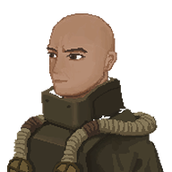性别: 男;
身份: 修理工(Repairman);
姓名: 维克·罗格(Vick·Rogge);
传记: 维克从懂事的时候开始, 就已经在汽修厂工作了, 他的手底功夫相当不错, 有时凭借着经验, 光听声音就能知道车子的毛病究竟出在哪里, 顾客们也都很安心将车子交到他手上, 不过比起他的手艺, 其实他光溜的头顶更加让人印象深刻, 有些不礼貌的人甚至会称他为光头维克, 维克也懒得跟他们计较, 因为他并不是真的秃头, 只是自己把头发都剃光了而已, 按他的说法, 头发容易卷进机器里, 这可是要命的, 在汽修厂也不是没发生过, 但也没必要整成大光头吧, 有人猜测是他小时候见过这种血淋淋的事故, 因而留下了一些心理创伤;
————
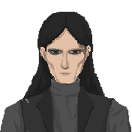性别: 男;
身份: 打手(Goon);
姓名: 崔·宇镇(Ujin·Choe);
传记: 崔·宇镇是隶属于恶狼帮的打手, 经常在舞厅赌场等地担任看守, 他外形削瘦神情冷漠, 虽说身手不算顶尖, 但出手阴狠绝不留情, 即使受伤也无所畏惧, 反而越战越勇, 有种不把对方弄死绝不罢休的执念, 他的对手往往最后血肉模糊不成人形, 场面极度血腥, 许多见过他出手的人之后都难免呕吐不止且频发噩梦, 凡是有他镇场的地方, 几乎没有人敢来闹事, 他也因此而名声在外, 甚至可止小孩夜啼;
————
性别: 女;
身份: 送餐员(Food Runner);
姓名: 曹·宝华(BaoHua·Cao);
传记: 曹·宝华的父亲在末世中经营着一家小小的中餐馆, 而她主要工作是充当外卖的送餐员, 由于步履矫健和经验丰富, 让她能够以非常高的效率将外卖安稳送达, 这样的日子虽然也不错, 但曹·宝华总想着去外面的世界看看, 而不是按部就班的将来接手她父亲的这个餐馆, 所以在某一天, 她留下一封信, 向家人表达了想去品尝世间各种美食和学习更多烹饪技术的想法后, 便带着行李离开了家, 但在末世之中游历可绝不是一件容易的事, 她遇到许多挑战和危险, 不过凭借着风一般的落跑速度, 她总能跨过挑战或在危险追上之前溜之大吉;
————
性别: 女;
身份: 驾驶员(Pilot);
姓名: 德西蕾·威尔逊(Desiree·Wilson);
传记: 德西蕾是一个驾驶员, 可她并没有自己的车子, 而是接受委托在各种场合担任司机, 这在末世其实不算罕见, 因为有些地区路况复杂而风险极高, 并非所有的司机都能胜任, 尽管世人对女司机似乎有着天然的歧视, 认为她们无法负责如此高要求的工作, 但德西蕾熟读废土生存手册, 驾驶风格一丝不苟, 操作谨小慎微, 使命必达, 所以这么多年, 她从未让她的雇主失望过, 她也因此赢得了大家的信任;
————
性别: 男;
身份: 装修工(Decorator);
姓名: 德科·雷特(Deke·Rett);
传记: 德科的曾祖应该是旧时代的某个室内设计大师, 直到现在德科家中还残留有许多关于设计装潢的书籍, 其中某本书里甚至就提到过他的曾祖, 德科从小就是看着这类书本长大的, 他也是乐于此道, 等他成年的时候, 即使是按照旧时代的标准, 他也已经是一个很不错的室内设计师了, 可由于时代倒退, 设计和施工不再细分, 所以换个角度来讲, 德科也是一个很不错的装修工, 他理论扎实经验丰富, 施工结果兼顾美观实用, 因而被众多用户所青睐, 原本一切都挺好的, 但德科总想趁着年轻前往其他城市, 看看那些只在书本中见过的旧时代艺术, 哪怕已经老化也无妨, 一直呆在安全区里, 眼中的一切感觉都充满了乏味, 于是他开始关注旅人, 看有没有什么合适的外出机会;
————
性别: 女;
身份: 学者(Scholar);
姓名: 壹原·律子(Ritsuko·Ichihara);
传记: 壹原·律子是一位专门研究野生动植物的学者, 她在雷雨城联盟的支持下带领着一个团队, 研究丧尸病毒对动植物的影响, 由于病毒只在人类身上会特别明显, 因此她的团队想从动植物身上探求是否有造出抗体的可能, 只是研究并不顺利, 雷雨城联盟最终也耗尽了耐心, 团队从此解散, 壹原·律子也不得不尝试再找一份合适的工作, 尽管她手无缚鸡之力, 为人又高傲且说话刺耳, 但不可否认的是她总能有真知灼见, 由于她可轻松辨别出各种植物, 因此如果她在场, 你也绝对不用担心会吃到毒蘑菇, 所以假如你的团队在寻找一个智力担当, 并且喜好知性的毒舌大姐姐, 那毫无疑问她将是一个绝佳的人选;
————
性别: 女;
身份: 老兵(Veteran);
姓名: 汉娜·兰博(Hanna·Rambo);
传记: 汉娜是一位老兵, 她曾参加过多场战役, 既包括对抗丧尸的战斗, 也有专门针对人类的任务, 令人惊讶的是, 在这些惨烈的战斗之中, 她总能坚持到最后, 可想而知她绝非是依靠纯粹的好运, 在服役期间, 她执行过不少让她深感遗憾的任务, 尽管那都是服从命令的需要, 但依然让她的心灵饱受折磨, 而最终她退役的原因, 据传闻是因为她罹患了非常严重的创伤后应激障碍(PTSD), 实际上她也曾考虑过回归普通人的生活, 例如结婚生子, 做一个好妻子, 当一个好妈妈, 然而每当在午夜惊醒, 她内心的不安总会让她无法平静, 因此, 她决定再次投身于战斗之中, 不管是出于何种目的, 直到迎来自己的终局;
————
性别: 男;
身份: 电工(Electrician);
姓名: 本杰明·特斯拉(Benjamin·Tesla);
传记: 年幼的本杰明从电影中目睹了濒死之人通过电击复活的场景, 当他的小狗不幸离世, 他也想用这种方式拯救他的爱宠, 当然最后直到飘出了狗肉的香味, 他也没能成功, 而且还被父母发现并痛打了一顿, 但这也成为了本杰明研究电学的开端, 很多年后他终于明白了一切, 并成为了一个熟练的电工, 但当年那阵狗肉香味似乎时不时的还会萦绕在他的鼻尖, 大灾变后由于年久失修, 雷雨城许多区域的电路其实都已经岌岌可危, 他自发的重构了不少老化的电路, 确保了城区的供电需求和用电安全, 但似乎没人关注过这件事, 重构阶段的短暂停电还让大家对他都颇有微词, 于是他决定先去干点别的事, 等居民们发现了自己的重要性, 再考虑要不要回来维持这千疮百孔的电网;
————
性别: 男;
身份: 门卫(Sentry);
姓名: 霍铎·威利斯(Hodor·Wylis);
传记: 霍铎是一个平凡的人, 在末世的阴影之下, 他有幸得到了一份门卫的工作, 尽管枯燥无味但他从不抱怨, 他所在的前线据点承平日久, 众人都疏于戒备, 只有霍铎还认真的履行着自己的职责, 终于, 在某个夜晚, 一波尸潮突然涌现, 所有人都惊慌失措, 恐慌的呼喊和尖叫回荡在黑暗的空气中, 幸好霍铎有条不紊的关闭了往来通道并及时拉响警报, 才避免了彻底的沦陷, 尽管据点守住了, 但尸潮依然带来了巨大的破坏, 在追究责任时, 众人将目光投向了没有背景的霍铎, 他成了替罪羊, 最后被迫离开了据点, 开始了流浪, 在往后的岁月中, 霍铎还时常回想起那个夜晚, 尸潮的腥臭和惊恐的呼声, 以及他的决断, 他或许没有特别的天赋, 但认真和坚韧便是他最大的亮点;
————
性别: 男;
身份: 服务员(Attendant);
姓名: 科纳·瑟维斯(Cona·Service);
传记: 科纳原本是都市圈某个高档餐厅的服务员, 他能说会道且优雅细心, 因而这份工作对他来说是得心应手, 眼看着就要升职成大堂领班了, 但他所在的餐厅由于人气极高, 引发了同行的陷害, 被污蔑说食材中掺杂了人肉, 导致被迫关停整改, 最后甚至餐厅的老板也被污陷入狱, 事情发展如此迅猛, 他都还没反应过来, 就已经成了失业人员, 现在他不得不重新开始寻找新的工作机会了, 在过去, 他曾想未来自己是否也能有机会经营一家餐厅, 为人们提供美味的食物和愉悦的用餐体验, 但现在经历了这些事, 他对此已经不敢再有任何奢望;
————
性别: 女;
身份: 技师(Technician);
姓名: 蒂达·菲利普(Theda·Philippe);
传记: 蒂达的父母在都市圈最繁华的商业中心经营着一家钟表店, 这些曾经被视为情怀之物的机械钟表, 在末世中又重新流行了起来, 原因无非是电子设备的零件变得难以获取, 而纯机械的钟表更具性价比罢了, 蒂达从小就在父亲的教导下学习钟表维修, 她观察细微又心灵手巧, 很快的便成了这方面的专家, 且不限于钟表, 她还能轻松应对大多数机械化的精密设备维修, 可好景不长, 愈发频繁的尸潮冲击着人类的生存空间, 治安环境也是每况愈下, 在一个骚乱的午后, 蒂达家的钟表店被零元购匪徒洗劫一空了, 甚至她的父母也都死于这场暴乱, 美满的家庭瞬间破碎, 留给她的就只有父亲送她的那套维修工具, 可生活还是要继续啊, 蒂达坚强的擦干泪水, 开始为生计而奔波;
————
性别: 女;
身份: 小偷(Thief);
姓名: 米娜(Mina);
传记: 米娜从小与父亲相依为命, 她的父亲是一个猎人, 教会了米娜许多狩猎的技巧, 他们会把猎物卖给城区的收购站, 以此换取一些生活用品, 但后来收购站被恶狼帮的人强行占领, 他们肆意压低物品收购价格, 米娜的父亲有一回只是抱怨了一句, 竟被癫狂的饿狼帮成员打成了重伤, 并在不久后不治身亡, 米娜从此记恨上了恶狼帮, 她开始偷取收购站的物品, 后来甚至敢去恶狼帮的营地行窃, 以此报复对方, 凭借着轻巧的身法和灵活的双手, 她屡屡得逞, 并把那些赃物都分给了遭受恶狼帮压迫的人, 可夜路走多了总会撞鬼的, 她最后还是被饿狼帮的人设计抓了个现行, 意外的是恶狼帮看中了她的身手, 许诺只要她不再捣乱, 并以后听命于饿狼帮, 便可不予计较, 她哪有选择, 这种情况也只能接受, 此后她被饿狼帮逼着去执行过不少危险的谍报任务, 可她从未忘记父亲的仇, 现在服从, 并不代表永远屈服;
————
性别: 女;
身份: 知识分子(Intellectual);
姓名: 金妮·罗塞尔(Jeanne·Roussell);
传记: 金妮自称为知识分子, 既对社会现实进行批判性思考/研究/反思, 并针对社会规范问题提出解决方案的人, 她确实是博学多才, 虽然有人认为她的知识都是来自于她的 AI 电子眼镜, 但实际上那就只是一副普通的防光眼镜, 因为她患有眼疾, 不得不带着特制眼镜以保护视力而已, 她曾组织过一个青年党派, 试图通过旧时代的政斗模式夺权, 重新建立起一个高效廉洁的政府, 但这可是疯狂且荒诞的末世, 她们还是太过天真的, 组织既没有经济基础, 又没有武力充当后盾, 所以运动轻易的就被联合都市给镇压了, 许多人都进了监狱, 金妮虽幸免于难, 但从此也上了黑名单, 不得不东躲西藏, 可她并没有就此放弃, 她不断在失败中总结经验, 并寻求下一次发起运动的时机;
————
性别: 男;
身份: 佣兵(Hired Gun);
姓名: 塞维尔(Thelwell);
传记: 塞维尔所属的佣兵团是专门针对丧尸的特殊队伍, 他们使用军事区研发的一种特别烟雾作为武器, 能在半封闭的空间中短暂的降低丧尸活力, 之后再对丧尸进行清剿, 这种战术无往不利, 他们也因此成为远近闻名的丧尸特攻专家, 但某次他们在执行委托时, 遭到了恶狼帮的埋伏, 在突如其来的火力倾泻之下, 塞维尔的战友死伤殆尽, 只有他那天因为生病没参加行动而侥幸逃过一劫, 可为什么恶狼帮要算计他们, 他们的部队从来不针对人类, 难道对方只是单纯的想杀人吗? 塞维尔多年以来一直在探究这场埋伏背后的原由, 可不管如何, 部队算是彻底完了, 塞维尔也不想再去其他组织了, 于是便开始单干, 现在陪伴他的, 就只有当年从队伍中带出来的那套防护装而已了;
————
性别: 男;
身份: 机师(Machinist);
姓名: 雷·朋(Peng·Lei);
传记: 雷·朋原本是联合都市中央军的后勤人员, 专门负责给各种设备进行维修和保养, 他乐于钻研且手艺娴熟, 因此工作得心应手, 一直以来他都醉心于捣鼓各种机械, 两耳不闻窗外事, 直到某天他才发现, 他所属的中央军可不只是对付丧尸, 更多的时候他们会被派去威胁周边据点和镇压普通民众, 甚至还屠杀过大量平民, 雷·朋突然觉得自己满手血腥, 尽管他一直安慰自己说什么身处末世无可奈何, 但他再也无法像过去那样欢快的对待自己的工作了, 他对所在部队了解越多, 内心就越是煎熬, 最终他决定离开, 去做些让自己好受的事;
————
性别: 男;
身份: 保安(Security);
姓名: 阿戈斯(Argos);
传记: 阿戈斯曾在军事区接受过短期的保镖课程训练, 那时他与博迪·盖特(保镖)刚好同班, 两人也缔结了深厚的友谊, 只是与博迪·盖特不同, 阿戈斯的身手相当不错, 几乎是达到普通人所能实现的极限水平了, 尽管还有些粗糙, 但主要是因为他有时控制不好力度, 在课程结业后, 博迪·盖特被派去担任贵妇的保镖, 而阿戈斯却以外包的形式被指派去某区政府大楼担任保安, 这绝对是大材小用, 而且这工作无趣, 收入也低, 也许是他在搏击课上 KO 了教官所引来的报复吧, 很快的他便厌烦了这份工作, 好不容易挨到合约期满, 他就头也不回的跑路了, 现在他四处物色更合适他的工作, 但他绝不想再做保安了;
————
性别: 女;
身份: 推销员(Salesperson);
姓名: 乔丝·吉拉德(Jos·Girard);
传记: 乔丝是一个隶属于商会的王牌推销员, 她身材娇小容貌可爱, 真实年龄与实际相貌并不相符, 她巧妙地运用这种反差, 故意打扮得像是小姑娘, 以此降低他人的戒心并博得同情, 这种战术让她能够更轻松地推销产品, 让销售工作事半功倍, 但她可不是光靠着相貌, 她最大的利器还是她那妙语连珠的口才, 甚至有人曾戏称, 她能够把你卖给你自己, 几乎没有什么顾客能在她的引诱下拒绝购买她推销的产品, 她也因此赚到了大量佣金, 可后来她因为购买的理财基金暴雷而损失惨重, 为了弥补收入, 她被迫干了一些灰色产品的销售, 结果惨遭牵而连入狱, 虽说幸好不久后便被释放, 但有了污点前科, 商会也不会再雇佣她, 现在她不得不前往人才市场, 重新寻觅一份工作, 但她始终保持昂扬的心态, 因为她相信乐观的态度能让话语更具信服力;
————
 性别: 男;
性别: 男;
身份: 小贩(Peddler);
姓名: 哈克(Harker);
传记: 哈克是一个四处摆摊的小贩, 他在回收站购低价购入一些废弃的小型电子产品, 经过简单的维修翻新后再次卖出, 获利颇丰, 但这些产品往往品质难有保证, 兴许购入后的第二天就坏掉了, 毕竟都不知道是转了多少手的玩意, 这也是为何哈克从不在某地长期摆摊的原因, 因为售后的事情就没完没了, 他当然也希望能卖一些品质有保障的产品, 这样就不用担惊受怕的总四处流窜了, 但末世几乎都已经找不到新零件, 替换上去的东西也不知道已经有多少年历史了, 现在他试图找人组织一个队伍, 前往旧时代的一些工业区探索, 看看是否能找到一批品质较好的零件, 以此打破他当前这种尴尬的游击小贩状态;
————
性别: 男;
身份: 艺人(Artist);
姓名: 汤姆·知音(Tom·ZhiYin);
传记: 汤姆是一个练习时长两年半的个人练习生, 希望能出道成为偶像, 在童年时期他的父母离异, 他和母亲一起生活, 他的母亲曾是一名歌手, 由于家庭原因她不得不放弃自己的音乐梦想, 这也是为什么他想成为一名偶像的原因, 因为他想实现他母亲未能实现的人生, 但由于尸潮的来袭, 他所在的地区变成了一片废土, 和平的生活已经成为了奢望, 母亲也在丧尸的袭击中死去, 他似乎没法继续实现他的梦想了, 只能是混迹于街头酒吧, 靠着唱跳 Rap 表演, 赚点小钱艰苦度日, 但他从未放弃过, 他认为危机总有一天会被解决, 而他也可以像他崇拜的旧时代传奇坤前辈那样, 成为带给他人希望与欢乐的偶像;
————
性别: 女;
身份: 小女孩(Girl);
姓名: 艾利·贝拉(Ellie·Bella);
传记: 科考队委托我们将艾利送往另一个科研基地, 这个小女孩对陌生人有很强的警惕心理, 我们也不清楚她跟科研到底有什么具体的关系, 但受人所托就尽量完成吧, 好在她还挺懂事, 不会给我们添什么麻烦, 她之前在科研中心似乎还学了不少有用的求生技能, 甚至包括烹饪, 做得一手好菜, 什么无蛋黄/影戏算条/天地一口香, 那可太棒了, 再也不想回到顿顿吃罐头的日子, 真希望这旅途别那么快结束;
————
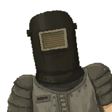性别: 男;
身份: 神秘人(Enigma);
姓名: 阿瑞斯(Ares);
传记: 没有人会怀疑神秘人的实力, 因为那些曾经挑战过他的人, 无一幸免的都已经死在他的手上了, 与此同时, 也没有人知道他头盔底下是长什么样, 哪怕是在吃饭, 他也不会把头盔摘下, 有人猜测他的力量正是来源于这个密封的头盔, 但也有人猜测他只是长相丑陋而羞于见人罢了, 当然也有人猜测他其实是感染了丧尸病毒的变异者, 正是这些病毒使得他获得了如此可怕的力量, 酒吧中的醉鬼们, 众说纷纭莫衷一是, 甚至连他的名称阿瑞斯, 都只是旁人给他的代号, 他的真名亦是无人知晓, 这个男人从头到尾, 似乎都笼罩在了迷雾当中;
————
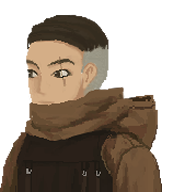性别: 男;
身份: 考古学家(Archeologist);
姓名: 胡·凯旋(KaiXuan·Hu);
传记: 胡·凯旋的出生背景并不寻常, 他的父母都是从事盗墓活动的摸金校尉, 这是种世代相传的职业, 但也是受到社会唾弃的职业, 因为他们为了财富, 不惜破坏古文明遗迹, 造成了无法挽回的历史损失, 胡·凯旋对此深为反感, 他从小就对历史有着浓厚的兴趣和敬意, 他希望能够保护和传承那些珍贵的文化遗产, 而不是像他的父辈那样亵渎它们, 所以在成年后他并没有继承家族事业, 而是选择了一条不同的道路, 成为了一名杰出的考古学家, 专注于探索和研究那些被遗忘的科技文明, 他认为这些也是人类历史的重要组成部分, 他希望能够揭示它们的奥秘和价值, 某种角度上, 他是在做一种新时代的考古;
————
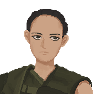性别: 女;
身份: 圣母(Vestal);
姓名: 玛利亚·玛格达(Maria·Magda);
传记: 玛利亚出身权贵之家, 她父亲是联合都市的高层领导, 家中更是产业无数富甲一方, 但她为人平和且热心于公益, 在她的父亲去世后, 她本可继续过着富足的生活, 可她为了从尸潮手中保护据点, 多次出资构建防御工事并请雇佣兵协助战斗, 还积极参与战后的重建工作, 可谓毁家纾难, 直至耗尽了父辈留下的所有资产, 这为她赢得了众人的拥护, 许多人都推举她成为新任的首领, 而她却婉言谢绝, 在做完了自己能做的事情后, 她便开始了流浪, 是什么原因让这个出身显赫的富家小姐愿意抛弃一切, 在末世中无私地去帮助她人, 没人能够理解, 但她过往的诸多善举, 让她在废土的许多地方都受到了欢迎;
————
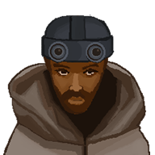性别: 男;
身份: 杀手(Hitman);
姓名: 卢卡·蒙塔纳(Luca·Montana);
传记: 卢卡曾是个臭名昭著的通缉犯, 他涉嫌多宗恶性杀人案, 导致多方势力都对他穷追不舍, 但他拥有着野兽般的直觉和高超的身手, 让许多赏金猎人在试图捕捉他时反被杀害, 直到他遇到了饿狼帮的首领, 一个比他更凶残而又极具智慧的人, 在多次交锋下, 他被肆意玩弄于股掌之间, 这击溃了他不可一世的高傲姿态, 从此他改头换面, 被收归于恶狼帮麾下, 专职刺杀敌对势力的要员, 现在的他被规定所有杀戮都必须有意义, 因此你在面对他时也不必惊慌失措, 只要你不在饿狼帮的猎杀榜之上, 而且也不主动挑衅他, 那么你就是安全的;
————
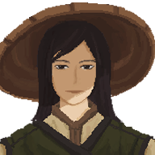性别: 男;
身份: 盗贼(Bandit);
姓名: 邦迪特(Bundit);
传记: 传闻恶狼帮麾下有一个谍报组织, 这个组织的成员遍布整个废土大陆, 依靠各种不起眼的职业作为伪装, 专职于侦查和渗透等幕后工作, 源源不断为饿狼帮带去各种信息, 而邦迪特的真实身份正是该组织的一员, 而且他还是个重要角色, 曾指挥过许多关键行动, 诸如掩护刺客的暗杀和窃取某些关键物品, 他同时也担任招募工作, 会在四处游走时, 将一些有潜力的人才引入组织里, 如果遇到合适的, 他甚至会向首领争取特赦, 即使是得罪过恶狼帮的人, 也可以得到一次机会, 例如说盗取过帮派物资的米娜(小偷), 正是被他看中身手而引入队伍的, 但如果你背叛了帮派, 邦迪特也有的是手段让你悔不当初;
————
性别: 女;
身份: 神棍(Huckster);
姓名: 海蒂·欧克斯(Heidi·Ochs);
传记: 海蒂是心灵会的创始人, 她宣称自己拥有超自然力量, 能帮助信徒们实现心中的愿望, 依靠一些伪科学和谎言, 她吸引了大批追随者, 他们都视她为尊者, 甘愿为她付出一切, 海蒂不仅收取高额会费, 还要求信徒们把财产都捐献给她, 以证明忠诚和信仰, 然而这些都是骗局而已, 她根本没有任何神秘的能力, 只是个贪婪和邪恶的神棍, 她所创立的心灵会实际上就是个具有传销性质的邪教组织, 许多人因为加入了这个组织而遭受了巨大的损失和伤害, 有些人甚至失去了生命, 但在某天, 一个满腔怒火的战士突然出现了, 他冲进了海蒂的教会, 向那里的人扫射, 无情的弹药疯狂倾泻, 他就像一个复仇死神那样, 将海蒂的邪教组织彻底给端掉了, 但可惜的是, 海蒂居然侥幸逃脱, 她流浪于废土之中, 隐藏着自己的身份, 等待着再崛起的机会;
————
性别: 男;
身份: 拾荒者(Scavenger);
姓名: 萨霍尼亚(Saahonia);
传记: 萨霍尼亚是一个拾荒者, 经常出没于垃圾堆和废墟之中, 搜集着有用的材料, 坊间传闻他过去可能是个战士, 只是因为伤病而被部队抛弃了, 还有传闻说他脸上有着可怕的烧伤, 因此他总是带着头巾遮挡面容, 甚至有人说他其实是个叛逃的军官, 因不满上级命令而离队, 由于担心被追杀所以才隐藏了身份, 但实际上萨霍尼亚是主动退役的, 他的脸上也没有伤, 只是不想再为了别人的利益而杀戮或牺牲罢了, 后来他意识到自己有种才能, 就是能够在一堆废物中发现可回收的物资, 当兵的经历又让他学会了如何在面对丧尸时隐藏自己的气息, 因此他改行当了拾荒者, 甚至暗地里组织了拾荒者工会, 依靠着过去和军事区的关系, 垄断了好几个地区的废料回收生意, 积攒了不少财富, 至于他总带着头巾, 那只是为了避免阳光和灰尘的侵扰而已;
————
性别: 女;
身份: 谈判专家(Negotiator);
姓名: 欧阳·国栋(GuoDong·Ouyanh);
传记: 欧阳·国栋是一名出色的谈判专家, 曾在联合都市任职, 负责处理各种复杂的外交事务, 她的口才让她在商业合作/军事冲突/文化交流等方面都能取得优势, 这为联合都市争取到了许多有利的条件, 她的能力也引起了其他势力的注意, 商会和首都圈都向她抛出了橄榄枝, 希望她能转投阵营, 可她并没有这样的打算, 她对联合都市还是有着忠诚和感情的, 但联合都市的高层却对她产生了怀疑, 认为她可能会受到其他势力的收买或影响, 于是开始对她冷淡和排斥, 甚至有些重要的事务也不再让她参与, 欧阳·国栋感到了极大的委屈和不满, 她觉得自己的才华被埋没, 贡献被忽视, 忠诚被怀疑, 她无法忍受这样的对待, 于是愤然辞职, 想去寻找一个更能认可和尊重她的地方;
————
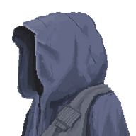性别: 男;
身份: 忍者(Ninja);
姓名: 甲贺·风太郎(Futaro·Koka);
传记: 忍者是种古老的特务职业, 源自于旧时代某个岛国的战乱时期, 他们擅长于潜伏/刺杀/侦察等行动, 对于各方势力都有着重要的影响, 然而随着时代变迁, 和平的氛围渐渐取代了战争的硝烟, 忍者们也逐渐失去了用武之地, 曾经辉煌的忍者村落, 有的消失在历史的尘埃中, 有的则沦为了旅游景点, 只能靠着向游客展示一些表面的忍术来维持生计, 在大灾变之后, 风太郎所在的忍村由于与世隔绝, 所以并没有受到多大的冲击, 但在某一天, 恶狼帮的势力突然闯进了这里, 要求村里的忍者效命于帮派, 如果这样能换取到一些物资, 到也不是不行, 但村里的忍术早就没人练了, 只有风太郎这个执拗的愣头青还懂一些, 只能派他当代表去给恶狼帮服务了, 风太郎他毫无善恶观念, 只知道服从恶狼帮首领的命令, 执行各种任务更是手到擒来, 恶狼帮的人都觉得, 用些许物资就能换来这样的人才, 简直是赚翻了;
————
性别: 女;
身份: 机械师(Mechanic);
姓名: 简珂·诺依曼(Janka·Neumann);
传记: 简珂的父亲是军事区研发部的成员, 得益于良好的成长环境和绝佳的天赋, 当她还是个孩子的时候, 就已经表现出了非凡的才能, 不管是民用电器还是军用武器, 乃至于当代几乎已经没人能搞懂的电子设备, 她都有办法进行维修, 甚至是从未见过的东西, 她拆过一遍后就能搞懂内部原理并进行复制, 这也让她受到了军事区极大的重视, 只是她并不想被拘束在基地中专门研究武器, 而是想去见识更多旧时代的高新科技, 因此她溜了出来, 以机械师的身份搭上了往来于不同地区的车队游历四方, 一个能把破烂设备起死回生的人, 不管在废土中的什么地方都是很受欢迎的, 因此她走南闯北, 倒也是顺风顺水;
————
性别: 女;
身份: 铁皮(Tin Can);
姓名: 鲍姆(Baum);
传记: 鲍姆是旧时代专为军事后勤工作而设计出来的机器人, 由于结实耐造而被大伙称之为铁皮, 她原本的昵称反而没人叫了, 早在大灾变之前, 她就已经在某军事基地工作了, 不单是杂务, 有时缺乏人手, 也会被派去医务室充当临时护工, 多年以来均是如此, 直到某天, 医务室来了个生命垂危的年轻士兵, 在一次难得的清醒中, 他央求铁皮读书给他听, 就像小时候妈妈在床头给他念书那样, 铁皮在士兵的行囊里找到了本《绿野仙踪》, 那是旧时代有名的童话故事, 铁皮便照做了, 如此持续了多个晚上, 没有奇迹, 士兵最终还是去世了, 但铁皮爱上了这本童话书, 她一遍又一遍的阅读它, 仿佛着了魔一样, 他跟书中的铁皮人一样没有心, 但她也想了解什么是爱情, 后来军事基地要被废弃了, 在众人都在准备转移的混乱中, 铁皮她溜了出来, 从此游荡于废土之上, 她想去找绿野仙踪, 她想找到属于自己的心;
————
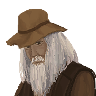性别: 男;
身份: 老战士(Warhorse);
姓名: 罗恩·巴尔特(Ron·Balter);
传记: 罗恩是一个退役多年的老战士, 在山林间隐居度日, 在末世中他并没有感到恐惧或者惊慌, 他觉得这个世界早就已经腐败不堪, 也许毁灭会更好, 他依靠着自己的生存技能和战斗经验, 惬意的活着, 直到某天他意外从老战友的口中, 得知了他的前妻已经去世的消息, 而前妻在与她离婚时怀着孕, 他们之间甚至还有一个女儿, 她可能还活着, 在这个危机四伏的废土世界里挣扎着, 尽管他从未见过这个女儿, 但他觉得自己有责任去寻找她, 给她一个父亲的拥抱和关爱, 于是他收拾好自己的行李, 拿起了自己珍藏多年的武器, 重新踏入了那个充满暴力和死亡的世界, 他不知道自己是否能否找到她, 也不知道她是否会接受这个父亲, 但他只知道, 这是他最后一次为了爱而战;
————
性别: 女;
身份: 突击兵(Shock Troop);
姓名: 许·沐沐(MuMu·Xu);
传记: 沐沐曾服役于军事区王牌突击队, 她原本出身乡下, 是个木讷怯弱的姑娘, 后来因家庭变故而被迫入伍, 在最初她跟不上部队的训练, 遭到了战友排挤, 但最终凭借着努力, 她还是成为了一个合格的战士, 甚至由于优秀的狙击才能被选调入突击队, 但在某次行动中, 她由于混乱环境而错手狙杀了一个小女孩, 虽然宪兵在事后调查了, 认为这并非是她的过错, 但她的精神依然受到了极大的打击, 萎靡不振了很长一段时间, 她的队长最终为她办理了暂时离伍的手续, 保留军籍的情况下让她去外界游历一番, 等解开了心结再考虑是否回来;
————
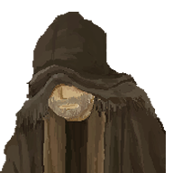性别: 男;
身份: 狙击手(Marksman);
姓名: 特瑞·霍克艾(Terry·Hawkeye);
传记: 特瑞是一个传奇狙击手, 虽然他已经上了年纪, 体能大不如前, 但他目光依然锐利如鹰, 如果有趁手的武器, 他能轻松打爆远在千米之外的丧尸头颅, 尽管他早已退役, 但仍然时常被军事区返聘回去指导新兵的狙击课程, 实际上汉娜(老兵)和沐沐(突击兵)等人也均是他过往的学生, 可谓桃李满天下, 他的人生已到达暮年, 在经历过许多事情后对世间已经毫无眷恋, 因此他最近总在思考还能为这个世界做点什么, 最终他决定用自己的狙击术, 去挑战丧尸中的王者既泰坦, 这可能是一次有去无回的作战, 因此他谨慎的物色着合适的队友;
————
性别: 女;
身份: 猎人(Hunter);
姓名: 达芙妮(Dafne);
传记: 达芙妮的身世是个奇妙故事, 据说她出生时被遗弃在森林里, 但幸运地被一只母狼收养, 她和狼群一起生活, 她与她的养母感情深厚, 互相依赖, 但某天, 她的养母不幸触发了猎人的捕兽夹而受了重伤, 达芙妮被迫向附近的猎人求救, 那是个善良的男人, 他不仅救了母狼, 还收留了达芙妮, 并他给她取了这个名字, 甚至教她如何使用武器和工具, 达芙妮很快就掌握了狩猎的技巧, 并展现出了惊人的天赋, 多年之后, 她的养母去世了, 达芙妮感到了空虚和孤独, 她决定离开山林去探索人类世界, 她对这个新的环境感到好奇和困惑, 常常因为不懂规则而惹出麻烦, 但她也因为她的狩猎能力而受到了人们的赞赏和尊重, 现在她为野味店定期提供优质食材, 年轻而又充满野性魅力的达芙妮正在慢慢适应这个新的丛林社会, 并寻找着自己的归属;
————
性别: 男;
身份: 园丁(Gardener);
姓名: 达奥(Dao);
传记: 达奥是乡下农夫的孩子, 从小就跟着父母在田地劳作, 长大后他听从父母的劝告, 前往繁华都市寻找机会, 之后在同乡的介绍下, 他到了某家大饭店充当帮厨, 洗碗切菜什么的当然也很幸苦, 可每天的工作餐都很美味, 达奥觉得也很不错了, 他的吃苦耐劳得到了一位大厨的赏识, 于是决定传授他厨艺, 出乎意料之外, 他在这方面非常有天赋, 甚至隐约有青出于蓝的迹象, 但这惹来了某些小人的嫉妒, 他们竟然下药毒害达奥, 导致他从此丧失了味觉, 大厨之梦就此破灭, 他被迫离开了饭店, 幸好在同乡的关照下, 他又找到了一份园丁的工作, 以前有种地的经验, 现在养花除草倒也是轻车熟路, 他甚至还培育出了一些新品种的花卉, 赢得了园艺爱好者们的钦佩, 但是每当他看到花园里摆放着的餐桌和餐具时, 他就会想起自己曾经在后厨里快乐的烹饪时光, 那些佳肴在他眼前浮现, 却永远无法再品尝到了;
————
性别: 女;
身份: 守林人(Woodsman);
姓名: 梅法拉·兰帕特(Mephala·Rampart);
传记: 梅法拉是一名忠诚的守林人, 她负责保护一片珍贵的森林资源, 提防着任何非法的狩猎和砍伐活动, 她热爱自己的工作, 享受着在树林里散步的自由, 不必与他人打交道, 她觉得这是种无价的幸福, 但某次巡逻时她发现了一群形迹可疑的猎人, 他们携带着高档的武器和装备, 显然不是普通的村民, 她利用自己的智慧和经验巧设陷阱将他们一网打尽, 后来才得知, 原来这是帮热衷于射猎的公子哥, 他们当中甚至有首都圈高层领导的儿子, 她把对方搞得如此难堪, 这些纨绔子弟恼羞成怒, 结果动用了手中的权利, 将她开除出守林人队伍, 她哭泣着哀求, 希望能够得到公平的对待, 却没能换来原谅, 最后她不得不痛苦地离开她守护多年的林子, 失魂落魄前往城区另寻工作;
————
性别: 女;
身份: 铁匠(Blacksmith);
姓名: 嘉尔·MK·杜伊(Garr·MK·Duil);
传记: 嘉尔的父亲是个铁匠, 经营着名为 MK 的武器店, 印有 MK 标志的冷兵器是冒险家们极为信赖的品牌, 嘉尔也为此自豪, 她从小便在父亲的指导下学习锻造, 别看她身子矮小, 挥舞铁锤可毫不含糊, 时常有人戏称她就像旧时代奇幻小说中的矮人, 她总会笑着说, 矮人就是品质保障, 可她的父亲由于常年酗酒, 在某个夜里终于把自己喝死了, 嘉尔和她的母亲在送别了他之后, 才发现她们接手了一个烂摊子, 尽管他们家的产品极受欢迎, 但父亲长期经营不善, 不少赊债根本无法回收, 而且近期原材料与能源涨价, 商会为了对抗联合都市与恶狼帮更是数次加税, 她们已无法继续经营了, 最终嘉尔在完成了剩余的订单并贩卖了铁锭等原材料后, 含着泪水把燃烧了几十年的炉火熄灭了, 安顿好了母亲, 她便外出当了一个冒险者, 但她心里的火苗并没有熄灭, 总有一天, 她会重新点燃炉火, 让 MK 牌子继续闪耀;
————
性别: 女;
身份: 化学家(Chemist);
姓名: 德米·特里亚(Deme·Tria);
传记: 德米家是开洗衣店的, 家中有本厚厚的《高等化学》, 是他父亲买来研究洗涤原理的, 但他父亲尝试了几次发现自己根本看不下去就放弃了, 小时候的德米体弱多病, 很少出门玩耍, 这本天书一般的东西也就成了她儿时的读物, 结果多年后, 她居然把整本书都背了下来, 甚至是复杂的分子结构式, 她都能默写出来, 从此店里不管是咖啡果汁还是红酒鲜血, 就没有任何顽固污渍能难得到她, 后来城区某家制药厂招聘助理, 她虽然没有接受过高等教育, 但还是凭借着令人瞠目结舌的化学知识获得了这个职位, 此后闲暇之余她在药厂的实验室做了大量实验, 验证了书本的许多理论, 可制药厂好几代人都在尝试研发丧尸疫苗, 尽管药厂收益不错, 然而这个无底洞最终还是拖垮了药厂, 德米也失业了, 但她并不担心, 过去没经验都能得到一份工作, 现在有了经验, 更是随便挑选, 她自信满满的前往了人才市场;
————
性别: 男;
身份: 武术家(Martial Artist);
姓名: 金·麦(Mai·Jing);
传记: 金·麦的父母在末世的尸潮和战乱中饿死了, 他们在临终前把最后的食物都留给了他, 希望他能活下去, 但金·麦知道自己也命不久矣了, 他没了亲人, 也没了希望, 只想去另一个世界和他的父母团聚, 所以当他遇到一个扎着辫子的虚弱男人时, 他没有犹豫便把自己的食物分给了这个男人, 他以为这是自己最后的善行, 他已经准备好告别这个世界了, 但那个男人吃了食物后, 很快便恢复了过来, 他原来是位武术高手, 只是因为疲乏而暂时失去了战斗力, 他感动于金·麦的无私与善良, 决意报答对方, 他先是抓了些野生动物给金·麦填饱肚子, 之后又教了他一些生存技巧和武术, 让他在这个危机四伏的末世能生存, 并将这份善意继续传递下去, 多年后金·麦成为了一个令恶人闻风丧胆的武术大师, 他多想再见到那个一向是无所谓的恩人, 但却再也没有听过他的消息, 不留痕迹的, 事了拂衣去, 堂堂侠客行;
————
性别: 男;
身份: 黑道大哥(Mobster);
姓名: 北野·如龙(Rulong·Takeshi);
传记: 在末世之中, 歌舞伎町愈发昌盛, 毕竟是秩序崩塌导致黑恶横行的环境, 人们都在这里尽情宣泄着自己的欲望, 如龙作为一个为达目而不择手段的极道恶徒, 在歌舞伎町是当之无愧的黑道领袖, 他虽然身手了得为人残暴, 但在开打之前他总会讲, 暴力是最终的手段, 在那之前, 我们还是先聊聊吧, 他的话语中透着一种冷静和威慑, 让人不得不佩服他的头脑和胆识, 他知道世上没什么是不能谈的, 只要能找到对方的弱点和利益点, 就能达成自己想要的结果, 他是个有着清晰目标和计划的人渣, 但究竟谋图些什么, 就只有他自己知道了;
————
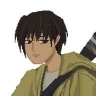性别: 男;
身份: 程序员(Programmer);
姓名: 肯·里奇(Ken·Ritchie);
传记: 肯是这个时代极少数还能为电脑开发新软件的人, 大灾变后由于生产线断裂, 人们再也无法生产出新的核心硬件, 现在还在运行的起码都是几十年前的老玩意了, 肯十分担忧在不远的未来, 在最后的硬件报废后, 这些旧时代的科技将会彻底遗失, 出于这份忧虑, 他决定去外面的世界看看, 探索是否还有恢复硬件生产的可能, 虽然他并不擅长硬件, 更没有在废土生存的本领, 但他还是坚定的走出门去;
————
性别: 女;
身份: 飞行员(Aviator);
姓名: 霍莉·修斯(Hollie·Hughes);
传记: 霍莉曾是名飞行员, 她受雇于首都圈空军大队, 驾驶着一架由旧时代无人机改造而来的小型机体翱翔于天际, 执行着各种特殊的任务, 许多人都羡慕她的岗位, 但实际上这是份相当凶险的工作, 由于大气环境突变, 现在这片大陆上的气候极不稳定, 可能上一刻还风和日丽, 但下一刻就黄沙漫天了, 过往有许多飞行员就是陨落于这变幻无常的天气中, 霍莉也不能幸免, 在执行过许多任务后, 她碰上了一次十分可怕的沙尘暴, 她座下的引擎出了故障, 最后迫降于荒无人烟的大漠, 没有水和食物, 但她最终还是活了下来, 她声称自己是得到了一只小狐狸的指引, 才找到了水源和食物并回归文明世界, 人们对此都将信将疑, 但不管如何, 她再也没有回空军大队复命了, 因为她厌倦了喜怒无常的天空, 更担心会被追责, 这种情况以前也不是没发生过, 她可赔不起飞机, 从此她便在各个据点流窜, 打着短工过活;
————
性别: 女;
身份: 千术师(Mystic);
姓名: 法兰姬(Frankie);
传记: 法兰姬出生于一个富裕的家庭, 她的童年在父母的宠爱和优质教育中度过, 但后来由于家道中落, 她被迫进入社会自主谋生, 最初她依靠学生时代习得的魔术, 在一些场所进行表演, 虽然收入微薄, 也勉强能混个温饱, 可后来她沾染了赌博的恶习, 在欠下了不少债务后, 她被迫铤而走险的干起了坑蒙拐骗的勾当, 例如说在赌局中出千, 她的技巧其实也不算高明, 但她会使用各种淫秽的话语吸引你的注意, 并使用她的容貌身段引诱你的分心, 继而达到目的, 有不少人(几乎都是男性)在赌桌上稀里糊涂的就输得倾家荡产, 她也因此得到了千术师的外号, 不过她现在不得不频繁更换藏身之处, 因为事后才明白过来的苦主都在找她, 她的人生变成了一场永无休止的逃亡之旅;
————
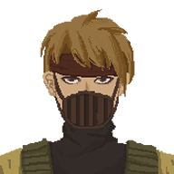性别: 男;
身份: 占卜师(Fortune Teller);
姓名: 拉斯普钦(Rasputin);
传记: 末世的各种苦难, 使得神秘主义如同野火般在人心中蔓延, 旧时代的迷信和欺诈伎俩再次披上新装, 重现于这个混乱的世间, 拉斯普钦便为借势兴起之人, 他自称占卜师, 能断人凶吉乃至移运改势, 靠着手中的塔罗牌四处招摇, 以其独特的洞察力和对人心的把握, 将一个又一个绝望的灵魂紧握手中, 他的言辞中充满了诱惑与欺骗, 许多人在绝望中寻找希望的曙光, 却不知不觉被他引入了迷途, 他便趁机敛财, 大肆搜刮, 他甚至还曾得到过某商会领导的信任, 被奉为座上宾, 过了好一段呼风唤雨的日子, 可谎言最终总有被戳破的时候, 他给予商会领导的投资建议反而导致巨额亏损, 最终他被打了一顿并赶出了城市, 但他并不打算就此收手, 反而时刻筹划着再干票大的;
————
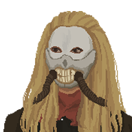性别: 男;
身份: 祭司(Priest);
姓名: 杜德勒(Dudler);
传记: 杜德勒过去曾是心灵会的祭司, 专职于各种宗教仪式, 诸如接引新人入会或表演跳大神, 他的丧尸舞确实颇具特色, 但对于他所供奉的神灵, 他并不是真信, 对别人来讲信教是寻找精神寄托, 对他来讲只是朝九晚五混碗饭吃罢了, 他也从来没把教会的尊者当一回事, 那就是个装神弄鬼的骗子罢了, 有时他也会想如此坑骗无知信徒是不是太过分了, 但末世下像他这种人, 除了随波逐流又有什么法子, 终于在某日, 他们的教会被一个疯狂的复仇死神给彻底端掉了, 那时杜德勒刚好在蹲坑摸鱼而逃过了一劫, 当他走出厕所发现, 教会已经陷入了冲天火光之中, 耳边的枪声和呼喊此起彼伏, 他只能赶紧跑路啊, 现在他徘徊于人才市场打算重新找份工作, 但除了僵尸舞跳得好, 他也没其他什么才能了, 恐怕不会那么顺利吧, 杜德勒感到前路暗淡;
————
性别: 男;
身份: 杀人魔(Murderer);
姓名: 杰森(Jason);
传记: 最早死在杰森手上的人是杰森的父亲, 因为他一直家暴杰森的母亲, 事后他们母子二人悄悄的将尸体埋葬了, 末世之中突然少了个人也很正常, 不会有人追究的, 杰森也从不后悔他杀了人, 正相反, 有种奇妙的解脱感在他心中蔓延, 他觉得对此感到兴奋和舒坦, 往后他与他的母亲度过了一段平静的日子, 可在他的母亲去世后, 他孤寂难耐, 终于在某个雨夜, 他带着面具出现在城市的阴暗角落, 捕杀落单的人, 他犯下了多起案件, 终于惊动了治安官与赏金猎人, 但他们始终没能逮住杰森, 反而被反杀了许多人, 但杰森也没继续在那个城市待下去了, 他现在流窜于多个据点, 随心所欲的过着他的猎杀生活;
————
性别: 男;
身份: 复仇者(Avenger);
姓名: 汤普森·弗兰奇(Thomson·French);
传记: 汤普森自小与他的妹妹相依为命, 他们一起努力工作, 为了温饱而奋斗, 心怀着对未来的美好期许, 可不幸的是, 某个黑帮老大垂涎于他妹妹的美貌, 居然诬陷汤普森与恶狼帮有所勾结, 证据是他曾给恶狼帮的车队加过油, 汤普森是加油站工人, 这本应只是工作的需要, 但执法人员在收受贿赂之后还是将他捉拿入狱, 在狱中他得知妹妹被黑帮逼奸致死的消息, 申冤无门的他原本打算自尽, 却意外被同狱室的人救下, 那人正是恶狼帮的干部崔·宇镇(打手), 他劝汤普森留住性命, 出狱再做打算, 甚至还教了他许多战斗的技巧, 汤普森复仇心切, 竭力学习, 最后身手甚至能反压崔·宇镇一把, 数个月后恶狼帮前来劫狱, 崔·宇镇便带着汤普森一并出逃, 最终他单枪匹马成功复仇, 将那个黑帮杀了个鸡犬不留, 更是将那个收受贿赂的执法人员抽筋扒皮, 从此他以复仇者自称, 专与那些无恶不作的黑帮对着干;
————
性别: 女;
身份: 萨满(Shaman);
姓名: 裴·赛纶(SaeRon·Bae);
传记: 裴·赛纶的母亲与外婆均是村里的萨满, 她们除了主持祭祀, 有时也会给村民看病, 讲的就是个心诚则灵, 但大多数情况下, 什么发热腹泻她们还真能治, 裴·赛纶一直以为那是神奇力量, 直到她成年准备接手她妈的工作, 才得知原来奥秘在于墨水, 她们在画黄符的墨水里加了抗生素, 呃, 还挺科学的呢, 毕竟不完全是心理效果, 她原本以为自己的生活会像母亲一样, 跳大神, 结婚生子, 再让自己的孩子跳大神, 可气候异变导致的干旱, 使得她们村变得很艰难, 为了生存, 裴·赛纶不得不外出务工, 可城市里也是人满为患啊, 不得已她只能复刻她妈的那一套, 跳大神兼卖灵符, 她衷心期望气候能够好转, 让她们的村庄能度过这场危机, 自己也能回到故乡与家人团聚;
————
性别: 女;
身份: 动漫Coser(Cosplayer);
姓名: 伊藤·美穗(Miho·Ito);
传记: 伊藤·美穗是个神秘而引人遐想的存在, 没人知道她从何而来, 也没人知道她的真实面容, 因为她总是带着口罩, 在末世中一副 JK 打扮, 洋溢着青春与活力, 起初有许多人都忧心她的安危, 但众多对她图谋不轨的人无端失踪于黑夜里, 人们才知道她绝非等闲之辈, 对她的身世, 大家有诸多猜测, 例如离家出走的军事区领导之女, 或者有异装癖的指尖奶茶扶他, 也许是觉醒的旧时代仿真情色人偶呢, 每隔几天坊间就会有新的说法流传开来, 任谁都是信誓旦旦的, 但谁都没法确认真伪, 对于那些没有恶意的人, 她那率真乐观的态度就像春风一般, 每次经过都会带给他们一丝温暖和希望, 在这个充满了苦涩的艰苦时代, 她正如一股甜蜜的清流, 让人们的眼光忍不住想追随;
————
性别: 女;
身份: 暴徒(Thug);
姓名: 克劳迪娅(Claudia);
传记: 克劳迪娅出生于贫苦人家, 曾参与金妮(知识分子)所组织的青年党, 一同为了理想而战, 她正是当年游行示威队伍中的先锋军, 可后来在反对联合都市的运动中受到逮捕, 本来是要被处以枪决, 但典狱长看中了她的身手, 暗地里将她以一千零件的价格打包卖给了废土竞技场, 对外则宣称犯人染病身亡, 尸首早已火化, 金妮并不知道内情, 为此还伤心了许久, 克劳迪娅从此便成为了竞技场的斗士, 每天都面对战斗和厮杀, 但她并没有坐以待毙, 反而在竞技场宣言革命理念, 传播什么自由平等的思想, 这引发了竞技场领主的担忧, 害怕她会给自己带来额外的麻烦, 所以一直在找机会想将她处理掉, 静悄悄杀死固然也是一个选择, 但如果有人看中她, 能卖出去赚点钱更好;
————
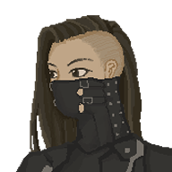性别: 女;
身份: 角斗士(Gladiator);
姓名: 金布莉(Kimblee);
传记: 金布莉原本是军事区的战士, 因在战场故意射杀多名战友而被军事法庭判处终身监禁, 可她最后却不安分的越狱了, 为了躲避宪兵的追捕, 她戴上面具, 将自己高价卖给了废土竞技场, 成为了这里的一个角斗士, 在此她可以尽情享受血腥而无需负任何责任, 她在场上常胜不败且虐杀对手花样百出, 所以受到了观众们的欢迎, 以至于还有人为她成立了粉丝团, 她也喜欢这种被众人追捧的感觉, 只是她总在言语间挖苦竞技场领主, 而竞技场领主也一直忧心她的来历会给自己带来额外的麻烦, 所以一直在考虑将她处理掉, 只是有些舍不得她给竞技场带来的收益, 如果有人能出钱买走她, 那就是一举两得的事;
————
性别: 男;
身份: 逃犯(Fugitive);
姓名: 欧仁(Eugene);
传记: 欧仁是个可怜的人, 在末世中他照顾着两个已经失去了父母的外甥, 尽管他力大无比且工作辛勤, 但总是食不果腹, 在失业后, 他为了喂饱两个孩子, 不得已抢劫了一家食品商店, 但从此也被通缉, 成为了一个逃犯, 他带着侄子在荒漠中躲避追兵, 却迷失了方向, 最后他们在沙尘暴中走散, 欧仁在寻找侄子的过程中被奴隶贩子抓住并卖到了废土竞技场, 他根本不想与人争斗, 但却被逼着上场, 出人意料的他靠着天生神力屡屡获胜, 为了增加观赏性, 竞技场领主经常安排他与一些凶猛的野兽进行对决, 但欧仁总能用他的蛮力将野兽彻底制服, 迄今为止他已经赢得了九十九场战斗, 只要再获胜一次, 他就可以重获自由, 前去寻找他的两个外甥了, 但竞技场领主并不打算就此放过他, 他的名字被挂在了出售栏, 等待他的将会是另一个地狱吗;
————
性别: 女;
身份: 杂技演员(Acrobat);
姓名: 安吉尔(Angier);
传记: 安吉尔的父母都是废土马戏团的资深成员, 她从小便在父母的教导下学习杂技, 童年便是在马戏团的四处演出中度过的, 在她接替父母正式出道之后, 很快便以精湛的技术成为了马戏团的台柱之一, 尤其擅长飞刀表演, 如此的惊险刺激的场面, 总能让在场的观众们屏住呼吸, 紧张地注视着每一把飞刀如何准确无误地击中目标, 再发出阵阵尖叫并爆发热烈掌声, 她例无虚发从未失过手, 但随着时间的流逝, 她慢慢厌倦了这种重复而单调的生活, 与许多年轻人一样, 她并非是一个享受安稳的人, 她也并不满足于只做一个马戏团的演员, 而是渴望着变化, 想着去冒险, 去体验不一样的人生, 因此她一直密切关注着往来的旅客和探险者, 希望找到合适的队伍以踏上新的旅程;
————
性别: 男;
身份: 驯兽师(Animal Handler);
姓名: 巴纳姆(Barnum);
传记: 巴纳姆是马戏团负责人的小儿子, 他从小就跟着马戏团四处演出, 由于特别喜欢亲近动物, 所以他最后成为了一名驯兽师, 不过与其他驯兽师不同, 他并不会通过鞭打动物来让它们服从, 而是通过耐心和食物奖励来训练动物, 他相信通过建立信任和友谊, 动物们会更愿意参与演出, 尽管有人认为逼迫动物表演是不人道的, 但在这资源匮乏的废土末世, 动物也面临着严酷的生存挑战, 巴纳姆认为动物在马戏团里有人照顾着, 比起在荒野中挣扎不是要更好吗, 他从小与安吉尔(杂技演员)一起长大, 可谓青梅竹马, 他也一直喜欢着安吉尔, 但安吉尔却嫌为人他幼稚且无趣, 所以明确拒绝了他的表白, 心碎的巴纳姆最终决定离开马戏团, 四处去历练一下, 让自己成为一个成熟且幽默的人, 也许开阔了自己的眼界, 就不会再一直惦记着安吉尔了;
————
性别: 男;
身份: 小丑(Clown);
姓名: 罗纳德(Ronald);
传记: 罗纳德是废土马戏团中的小丑, 他的过去如同他的笑话一样扑朔迷离, 无人能够说清楚, 马戏团的负责人甚至回忆不起他是在何时何地加入的, 他身着五彩斑斓的小丑服装, 却不擅长任何传统的马戏技艺, 如抛接球或踩滚筒, 他唯一的才艺就是讲笑话, 无论是醒着还是睡着, 他总能不断地说出各种段子, 然而, 他的笑话往往时机不当, 导致本应欢乐的气氛突然陷入尴尬的沉默, 起初马戏团的成员们还抱有一丝希望, 认为他或许能够带来一些乐趣, 毕竟他并不索要工资, 只要有食物就满足了, 但随着时间的推移, 他那看似无害的笑话和喋喋不休的本性开始让人感到恐惧, 仿佛被某种诅咒缠身, 无法停止言语, 连一刻的宁静都成为了奢望, 现在每个人都期盼着他能被某个路过的队伍看上, 赶紧带他离开吧, 对于大伙来讲, 这将是一种解脱;
————
性别: 男;
身份: 奴隶(Slave);
姓名: 萨德(Sadd);
传记: 萨德原本是良子乡农场的帮工, 他一直在蔬果园干活, 闲暇之余也热衷于利用农场生产的新鲜食材做些美食, 尽管工资低的可怜, 农场外围还时不时的有些丧尸闯入, 但末世能过上这样的日子, 萨德也很满足了, 可这样的小确幸生活并未能长久持续, 萨德最终还是失业了, 因为吝啬的农场主嫌他总是浪费食物捣鼓些不切实际的, 他被赶出农场后, 原本打算前往谷地城重新寻觅工作, 却没料到刚进城, 就被掮客蒙骗, 先是藉口说介绍费被坑了钱, 之后又被拐骗说芦苇镇有工作机会, 结果最终被卖给了原油镇的奴隶商人, 等他反应过来, 已经深陷牢笼中了, 正当他深陷绝望之际, 没料到居然被我们救出了苦海, 现在他无处可去, 所以想跟随我们的队伍, 但他这人嘛, 可能并不合适当个冒险家, 不过考虑到他熟悉农务而且做菜还算好吃, 也许有些地方能用得上他, 总之救人救到底, 那就先让他跟着我们吧;
————
性别: 男;
身份: 囚犯(Prisoner);
姓名: 安利克(Anlyck);
传记: 安利克原本是星光城的居民, 由于城镇持续破败而且缺乏物资, 他最终不得不选择背井离乡, 起初他打算前往雷雨城谋求生计, 却不幸的在半路遭遇匪徒, 先是被抢光了行李, 之后又被遭到了毒打和囚禁, 而且抓他的那些人极其丧心病狂, 他们将抓来的人关入地牢, 并非纯粹是为了享乐, 而是要将他们做成食物, 安利克看着地牢中的狱友每天一个接一个的被带走, 不知何时就轮到自己, 他一直心惊胆战, 但某天匪徒抓来的一个新人突然就活尸化了, 并且袭击了他们, 这最终导致匪徒的据点从内部开始彻底崩毁, 而他也终于是走运了一次, 依靠着平时狱卒用来发信号的收音机广播自己的位置, 最终被我们拯救, 现在他决心跟随我们的队伍, 以报答我们的救命之恩, 但他似乎没什么特长, 对于我们的队伍可能没多大帮助, 不过我们还是可以先带他回星光城看看, 也许在他老家, 能够帮我们干点合适的活;
————
性别: 男;
身份: 实验对象(Test Subject);
姓名: 乔尼亚斯(Jonias);
传记: 乔尼亚斯是个敏锐的智者, 他喜好自然且乐于思考, 过去他一直居住在天堂岛, 那里风景秀丽, 气候宜人, 不愁吃穿, 人们幸福的生活, 没有犯罪和丧尸, 可他总觉得身边的一切并不真实, 直到某天他终于找到了与外界联系的方法, 而我们刚好也意外在一座堡垒中发现了浸泡在培养皿中的他, 我们遵照他的意愿, 将他重新释放到这个世界, 他虚弱不堪的差点死去, 但最终凭借着强烈的求生欲望还是支撑了下来, 我们不确定这对他来讲是是否为好事, 因为他得重新适应这个残酷的世界了, 但他坚定的认为真实就是最好的归属, 并努力熟悉周遭的一切, 但他又怎能确定, 自己只不过是从一个虚拟世界, 踏入到另一个虚拟世界呢, 我们对自己所处的这个世界也猜疑了起来;
————
性别: 女;
身份: 不良少女(Femme Fatale);
姓名: 北野·由纪(Yuki·Takeshi);
传记: 由纪是歌舞伎町上一代总长的幺女, 她自小生活在暴力与犯罪的环境中, 对于各种恶行是司空见惯, 父兄的宠溺更是养成了她无法无天的个性, 在十几岁时, 她便组织了一个由青少年为主体的飞女集团, 四处敲诈勒索乃至于纵火绑架, 许多人起初以为就是恶作剧的不良少女, 也没把她当回事, 只有被盯上之后, 才发现她手段残忍恶劣, 简直是突破常人想象, 她的身手与决断比起许多黑道恶徒更是有之过而无不及, 但她终于有一次踢到铁板了, 在绑架了商会某领袖的儿子后, 对方为此出动了大批雇佣兵, 而她也不得不向家人求助, 幸好最终在堂兄如龙(黑道大哥)的斡旋下才免于一场大战, 她的飞女集体也因此被迫解散, 可她并未灰心, 相反她变得成熟了, 知道做事需要谨慎且低调, 现在她正密谋着重建组织, 这次她的回归将会愈发可怕;
————
性别: 女;
身份: 歌手(Singer);
姓名: 贾·明美(MingMei·Jia);
传记: 明美是个歌手, 但实际上她唱跳双废, 稍微高点的音她状态不好时都会唱不上去, 更不用说她那被誉为外婆迪斯科的舞姿, 但她有种无法言喻的魅力, 是如此特别, 只要看她在台上演出, 那便是一种美的享受, 至于才艺, 大家总会十分宽容的调侃, 差不多得了, 还要啥自行车, 其实明美又何尝不知自己在歌舞这方面并没有天分, 她其实真正想做的是演员, 且认为那才是自己能发挥的地方, 不过末世之中, 别说拍摄电影或电视剧, 就是低成本的舞台剧都没人搞了, 朝不保夕的谁会去进行这种投资或消费呢, 她也只能是跟随车队前往各大城市的酒吧和商场进行演出, 不过她最近正在尝试编写舞台剧本, 也期待能找到感兴趣的投资人, 既然没人做, 那不如就自己来试试吧;
————
性别: 男;
身份: 教授(Instructor);
姓名: 赫曼·盖兹勒(Hermann·Geiszler);
传记: 赫曼是天才中的天才, 他的智慧与见识无人能及, 几乎所有认识他的人都承认这点, 他也因此被人们敬称为教授, 此前他受雇于联合都市的研究中心, 作为专员进行着病毒疫苗的研究, 被寄予厚望的他起初确实是取得了一些成果, 但很快他就意识到, 旧时代如此高科技的水平都无法搞定疫苗不是没道理的, 病毒在面对疫苗后变异得十分迅猛, 疫苗很快便失去了作用, 且病毒的传染性和病发速反而更强了, 他认为仅凭当前的技术手段已经无法解决问题, 在向上级报告了这个情况后, 他便黯然离开了研究所, 尽管众人极力挽留, 认为即使不针对病毒他也可以做点别的研究, 但他去意已决, 打算去探究病毒肆虐后的生态, 也许会有些其他发现, 一直窝在研究所里对认知并无帮助, 目前他正在尝试读万卷书后的行万里路, 但像他这种不懂人情世故的书呆子, 究竟要在这尘世中吃多少苦, 才能真正成熟起来呢;
————
性别: 女;
身份: 酒保(Bartender);
姓名: 金·小野(XiaoYe·Jing);
传记: 小野出身名门, 家中富贵无比, 按理来说她应当享受着锦衣玉食的生活, 然而她父亲却远见卓识的认为, 在此末世之中, 财富也好权势也罢, 都是镜花水月, 不会长久的, 想要生存, 就得学些实用技能, 以防有朝一日落魄而无以为生, 因此他把自己的几个孩子都送去不同的地方学习, 而小野被送往了一家高档酒馆, 开始了作为酒保的生涯, 她确实是学到了许多东西, 例如八面玲珑的处事方法, 还有调酒, 她就是有办法把难以下咽的烈性蒸馏酒弄成各种美味饮品, 这也让她在圈子中声名鹊起, 加上她俊俏的中性外表, 更是吸引了不少来客, 甚至包括女性, 她的父亲本来也认可了她的成就, 允许她回家享受, 可小野却觉不满足于此, 她还想再学点其他生存技巧, 因此她盯上了往来的旅客, 也许加入冒险团去废土中历练一番也是不错的选择;
————
性别: 男;
身份: 探险家(Explorer);
姓名: 维托里奥·马兰(Vittorio·Malin);
传记: 维托里奥是个经验丰富的探险家, 热衷于前往各种偏远的地区进行探索, 例如说高耸的雪山或阴暗的密林, 在大自然的怀抱中, 他享受着一种难以言喻的宁静与自由, 然而, 维托里奥的探险并不仅仅只是为了追求刺激或个人的满足, 他心中其实有着更远大的目标, 在这个末世中, 尸潮冲击愈发频繁, 四处都是暴力与凶杀, 而病毒疫苗更是遥遥无期, 维托里奥深信, 如果能够找到一个足够隐秘且安全的地方, 建立一个自给自足且的和谐社区, 那么在这混乱的人世中至少能为人类保留一些文明的火种, 因此, 他不断地探索, 希望能找到那个理想之地, 可由于种种因素, 那种地点似乎总是触手可得却又遥不可及, 但这并没有让维托里奥放弃, 他坚信, 只要继续的努力, 总有一天能够为那些无家可归而又心存善意的人们找到一个真正的避风港;
————
性别: 男;
身份: 摄影师(Photographer);
姓名: 卡马拉·达盖尔(Kamara·Daguerre);
传记: 在旧时代, 由于科技的进步和设备的普及, 许多人都会使用拍摄的方式来记录各种事情, 摄影也是种十分常见的技术, 但随着大灾变的降临, 世界陷入了混乱和动荡之中, 科技倒退渐渐使得摄影也成为了一门罕见的技艺, 而卡马拉正是末世之中一名精通用光艺术的摄影师, 他原本出身农家, 如果没有意外, 按常理他应当继承家业成为一个农民, 但命运的转折在于他偶然获得了一台旧时代的莱卡相机, 这不仅改变了他的人生轨迹, 也点燃了他对摄影的热爱, 成年后卡马拉开设了一间小小的影楼为大众服务, 但他也时常外出游历, 凭借着敏锐的观察力和风骚的走位, 他捕捉到了末世中许多有价值的镜头, 记录着这个悲哀而又荒诞的世界, 相信待人类文明得以复兴之时, 他所记录下来的这些图像, 必将成为后人认识这个时代的重要媒介之一;
————
性别: 男;
身份: 兽医(Veterinarian);
姓名: 艾迪·杜立德(Eddie·Dolittle);
传记: 在废土世界, 由于医疗资源极其匮乏, 所以虽然艾迪只是个兽医, 却也经常会遇到人们求助于他治疗人类的情况, 尽管他反复强调自己的专业是动物医学, 但在绝望的人眼中, 他似乎就成了唯一的希望, 艾迪作为兽医, 毫无疑问是很有水平的, 因为他善于观察动物的表现, 所以往往能够对症下药, 但人兽医学真的是两码事, 可他最终又很难绝情的无视那些可怜的病患, 不管如何吧, 艾迪在给人类治病时总是非常谨慎, 当他不得不出手的时候, 就会先询问对方的体重和症状, 然后再根据自己给大型动物如奶牛配药的经验, 暗地里计算出一个合适的药物剂量, 虽然这种方法并不科学, 但这已经是最好的尝试了, 他也从不敢保证治疗效果, 不过他会尽力帮助每一个求助者;
————
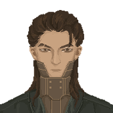性别: 男;
身份: 武士(Warrior);
姓名: 伊·良子(I·Rako);
传记: 伊·良子是一位剑术大师, 他所开创的彗星流, 由于特殊的握剑方式与极致的爆发力, 使得攻击范围和杀伤力远胜同时代其他剑法, 虽说七步以内枪又准又快, 但子弹终究有限, 在废土末世中面对源源不绝的丧尸, 一手高超的剑法比起枪械显得更加可靠, 他收养了不少孤儿, 并传授他们武术, 希望他们能惩恶扬善, 但在一个狂风呼啸的夜晚, 他一个刚获得免许皆传的弟子, 竟趁着月黑风高, 杀死了睡梦中的所有门人, 伊·良子更是被这个逆徒斩首, 随后一把大火焚毁了整个门派, 彗星流因此消失于废土之中, 而凶手从此却顶着伊·良子的名号四处作恶, 如此丧心病狂的杀人犯, 靠着一手剑法在废土之中作奸犯科横行霸道, 究竟他追求财富和权力的修罗之路还能再走多远;
————
性别: 女;
身份: 舞者(Dancer);
姓名: 宮本·昂(Aoi·Miyamoto);
传记: 昂的父母是某歌舞团的负责人, 她从小学习舞蹈, 父母也是对她寄予厚望, 实际上她还有个双胞胎弟弟, 由于眼盲, 所以被当作累赘, 生活在姐姐的阴影中, 可昂发现, 弟弟天分很好, 他对音乐和节奏的感知非常敏锐, 如果加以训练, 也可能成为优秀的舞者, 因此她背地里拉着弟弟一起学习, 并许诺自己将成为他的眼睛, 在经过艰苦的努力后, 他们姐弟二人配合默契, 尽管弟弟看不见, 但在昂的引导下, 也可以完成一些高难度的双人舞曲, 他们的舞蹈充满了情感和故事性, 每个动作都精确到位, 在向歌舞团的人展示后, 他们惊艳了全场, 自此盲眼舞者就成为了歌舞团招牌, 可某次他们前往一个老旧的舞台表演, 场地由于年久失修发生了坍塌, 昂的弟弟由于躲避不及, 就此结束了他传奇而短暂的一生, 昂也因此大受打击, 心灰意冷的她离开了歌舞团, 从此流浪于各地, 她还会有机会解开自己的心结吗;
————
性别: 男;
身份: 消防员(Firefighter);
姓名: 比尔·非尔(Bill·Fire);
传记: 比尔曾经是隶属于首都圈公共管理部门的一个消防员, 工作便是保护人们免受火灾的威胁, 他为自己的工作感到自豪, 但是随着尸潮的冲击和各方势力的争斗, 首都圈的统治变得愈发不稳定, 维持秩序和安全越来越困难, 火灾也变得频繁和猛烈, 很多地方都被烧成了废墟, 比尔和他的同事们尽力救援, 但他们的人手和设备都不足以应对日渐扩散的危机, 到后来他们甚至很难得到报酬, 因为公共预算被压缩, 甚至连基本的工资都无法保障了, 面对生存的压力, 比尔渐渐失去了信心和希望, 他觉得自己的工作已经无以为继, 不得已他只能遗憾离开岗位, 四处寻找一些生计, 他多么怀念过去, 与自己的同事并肩作战, 拯救处于危难中的市民, 但那些日子已经是过眼云烟了;
————
性别: 女;
身份: 侦探(Detective);
姓名: 夏洛奇亚·道尔(Sherlockia·Doyle);
传记: 夏洛奇亚看过许多旧时代的经典侦探作品, 诸如《阿加莎作品集》和《金田少年事件簿》等等, 再加上她刻意的学习, 很快便具备了极高的洞察力, 能在一些蛛丝马迹中推导出前因后果, 如果是在旧时代, 她作为一个私家侦探应该会有不错的生活, 但很可惜, 在末世中违法犯罪比比皆是, 大多数也是无人追究, 毕竟都是无政府状态了, 她的破案能力也就没了用武之地, 出于生活的需要, 她不得不在酒馆或街道主动揽活赚零件, 有时她甚至会运用卓越的观察力, 把一些外地来的旅客坑得欲哭无泪, 但只拼脑子不动手, 这她的基本原则;
————
性别: 男;
身份: 作战单元(Combat Unit);
姓名: CU83(CU83);
传记: CU83 是旧时代被设计和制造出来的战争兵器, 专门为军队服务, 存在也只有一个目的, 便是参与战争, 他经历了多场惨烈而毫无意义的战斗, 尽管如此, 他没有怨言, 因为这就是他存在的意义, 他虽然并不享受杀戮, 但喜欢在胜利后被战友们拉着欢庆的氛围, 那总是让他感到一种难以言喻的满足, 可在最后一场毁灭性的突袭战斗中, 他因为遭到骇客入侵而宕机了, 等到他好不容易重启, 却发现自己所属的部队已经不复存在, 曾经指挥他的政权也早已经崩溃, 周围是一片废墟, 连一丝生命的迹象都没有, 此后他便漫无目的徘徊于废土之中, 他自己也不知道自己究竟是想干什么, 也许是希望得到下一份指令吧, 如果能再回到过去, 与战友们并肩作战, 那是多么美好的事情啊, 但现实却是残酷的, 只留下了 CU83 自己去面对那无尽的孤独;
————
性别: 女;
身份: 服务单元(Service Unit);
姓名: SU84(SU84);
传记: SU84 是在科技鼎盛的旧时代被精心设计和制造出来的高级生活机器人, 由于工作特性需要温柔和耐心, 所以她被赋予了女性的人格, 主要职责是提供全面的家政服务, 但她的初代主人额外为她安装了语言和礼仪的模组, 这使得她谈吐举止十分优雅, 所以她有时也会被租借到高端商场或豪华酒店, 担任临时的服务员, 而平时她则在主人经营的酒吧里帮忙, SU84 以其无可挑剔的服务和亲切的交流方式深受顾客喜爱, 然而某天, 赏金猎人与通缉犯在酒吧内突然爆发的一场激烈对抗, 彻底地摧毁了这个她曾经称之为家的地方, 她的主人也在这场骚乱里不知所踪, 现在她孤身一人漂泊在荒芜的废土之上, 依靠着内置的导航系统和生存模块, 在废墟中寻找着任何关于主人下落的线索, 她坚持不懈地搜寻着, 希望有一天能够找回她敬爱的主人, 然后重建那个充满欢笑和温暖记忆的酒吧, 再回到过去的幸福生活;
————
性别: 男;
身份: 少年(Youth);
姓名: 连·索德(Len·Sodder);
传记: 连自幼生活在某个隐秘研究所, 那里有不少科研人员, 他不知道自己究竟从何而来, 多次试图寻找答案但都以失败告终, 身边的人总说等时机成熟, 自然会有人告诉他, 他隐约觉得自己身上可能担负着某种重大的责任, 但具体是什么却毫无头绪, 在这种平淡无趣且略带压抑的氛围中, 连慢慢长大了, 他在大人的教导下学习了各种废土生存技巧, 只为了将来以防万一, 在这种环境里他并没有成为一个忧郁的人, 相反他养成了喜欢开玩笑的习惯, 其实只是为了帮助身边的人排解苦闷, 终于在某天, 他被带出了研究所, 打算前往某个基地执行肩负的责任, 在路上他甚至遇到了另一个与他境况十分相似的少女, 他很开心能有同龄人相伴, 但还没等他们熟络起来, 车队便遭到了袭击, 只是他毫无惧色, 认为如果自己会死, 那便不是肩负重担之人, 那样的话, 死了也就无所谓啦, 乐观的他积极的安慰着身边的人;
————
性别: 女;
身份: 少女(Young Girl);
姓名: 铃·梅洛(Rin·Merlot);
传记: 铃一直生活在一个隐秘的研究所中, 她的身边都是些科研人员, 除了研究实验, 就是教授玲各种知识, 只为了她将来能在这片废土上求生, 他们都对玲非常宠爱, 但玲却敏锐的发现他们都总是忧心忡忡, 她年纪还小, 不知道大人们究竟是在担心什么, 但她会想办法安慰他们, 例如说在烹饪课上多做几分美食, 或在家政课上用多余的布料弄几个小饰品, 送给照顾她的人, 这份体贴也曾让许多科研人员感动落泪, 终于在某天, 她被带出了研究所, 前往被称为基地的据点, 在半路上有另一支队伍与他们汇合了, 她还遇到了一个与她年纪相仿的男孩子, 他似乎很爱笑, 总是滔滔不绝说很多话想逗她开心, 但没等他们熟悉起来, 车队就受到了袭击, 激烈的追逐和不绝的枪声使她感到害怕, 但那个男孩却泰然自若, 并安慰着她, 慢慢的玲也冷静了下来, 毕竟惊恐也于事无补, 她对眼前这个少年也产生了一些好感;
————
04. 其他人物
除 9 个初始角色和 78 个常规角色, 游戏中还有 80 个工具人(工人/农民/饲养员)和 44 个玩家定义角色, 工具人是自建城凑数的, 所以就没有传记, 姓名也继续保持了原本的随机状态, 而玩家定义角色则是当年参与众筹的玩家们预设的角色, 他们大多有自己的姓名和故事, 尽管 XJ 认为他们当中有部分内容跟游戏的氛围并不是很搭, 但乱改人家的设定也不是很妥当, 所以就不瞎编乱造了, 维持原样吧;